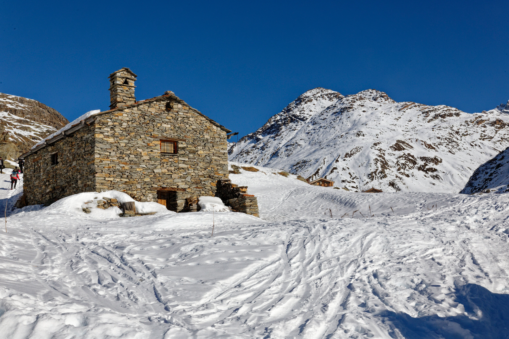

I nostri itinerari

| Itinerario | Difficoltà | Durata | Dislivello |
|---|---|---|---|
| Anello del Lago | Facile | 2 h | 150 m |
| Sentiero dei Larici | Media | 4 h | 600 m |
| Cima Aquila | Difficile | 7 h | 1200 m |
Consigli
Scarponi adatti
Scegli calzature con suola scolpita e già rodate.
Acqua e cibo
Porta almeno un litro e mezzo d'acqua e qualcosa di energetico.